Handmade / 手作
Handmade Works
Handmade models, miniatures, kinetic objects, and studio-built worlds with lights,
movement, playful construction, and story-like details.
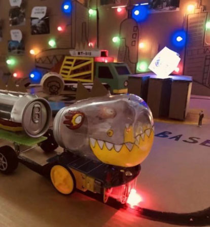
01 · Handmade
Tin Train Creature
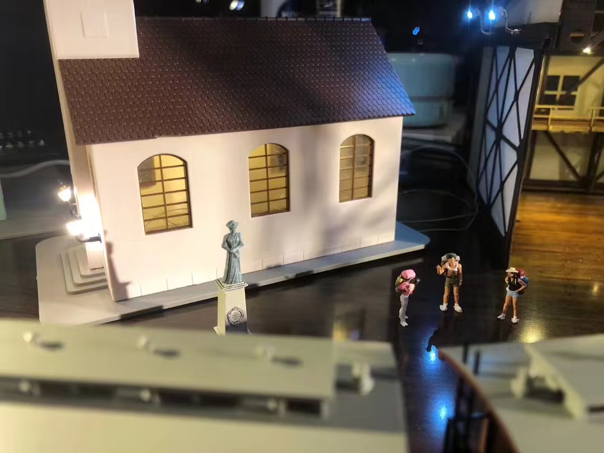
02 · Handmade
Station Model
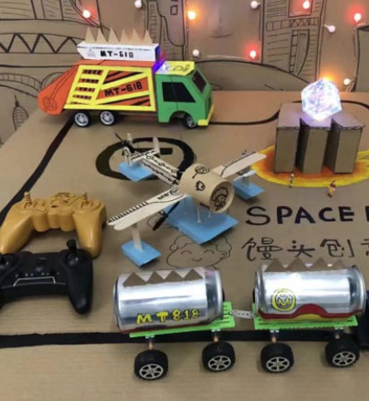
03 · Handmade
Space Lab Vehicles
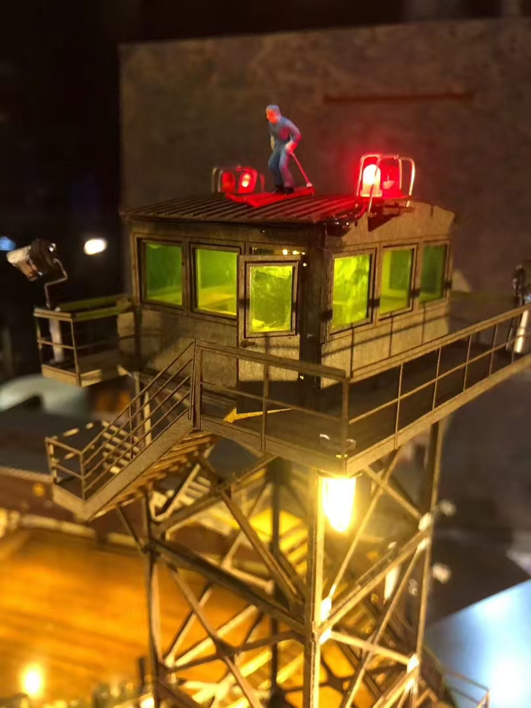
04 · Handmade
Watchtower Light
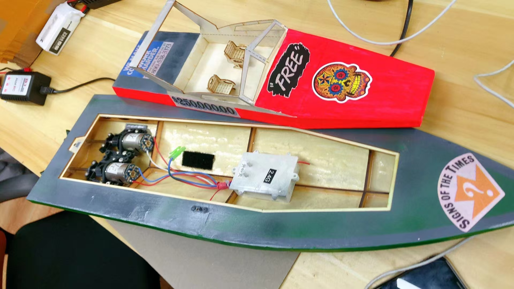
05 · Handmade
Free Boat Mechanism
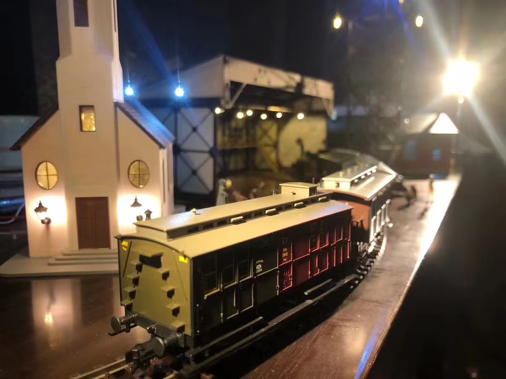
06 · Handmade
Night Train
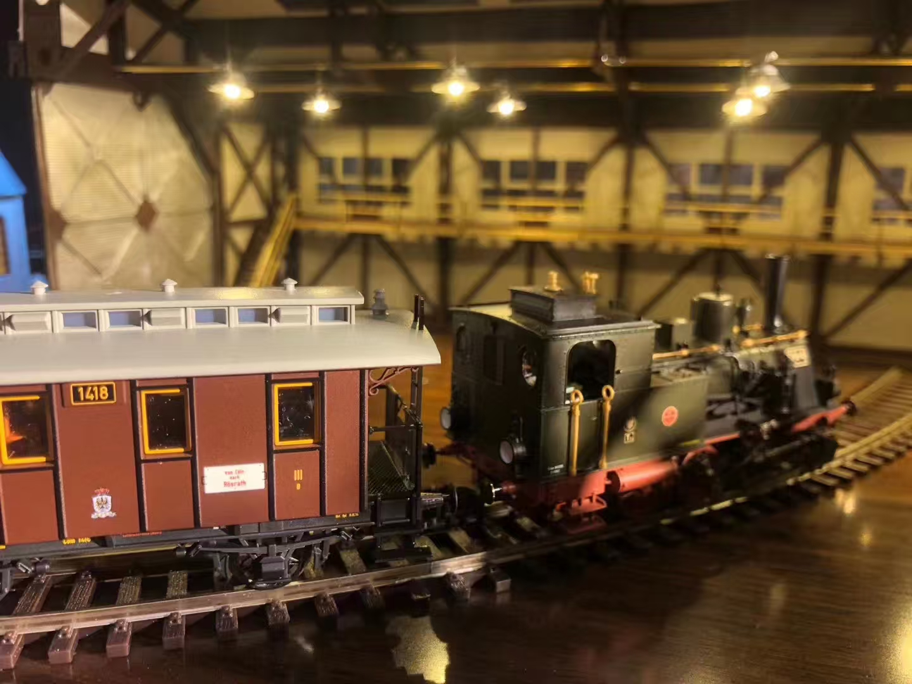
07 · Handmade
Train Detail
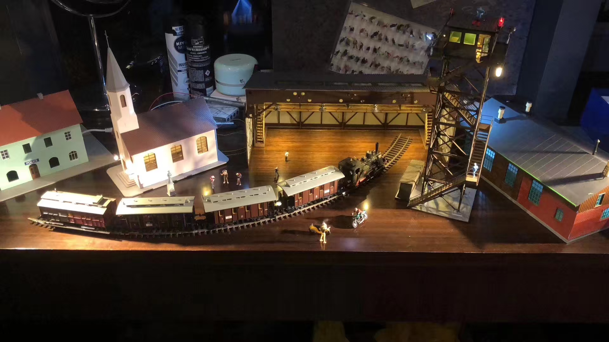
08 · Handmade
Miniature Station World
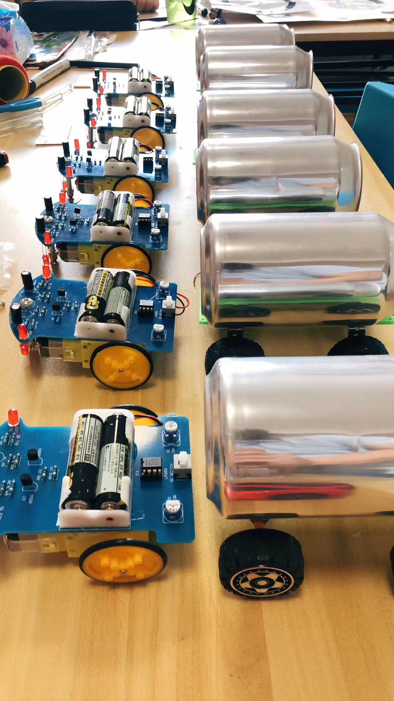
09 · Handmade
Rolling Machines
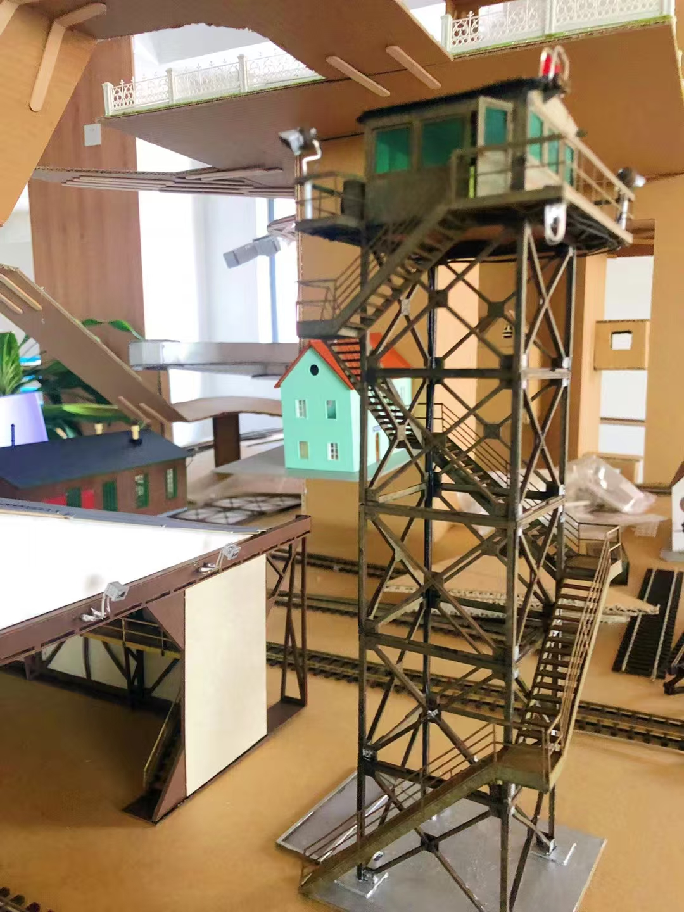
10 · Handmade
Tower Model
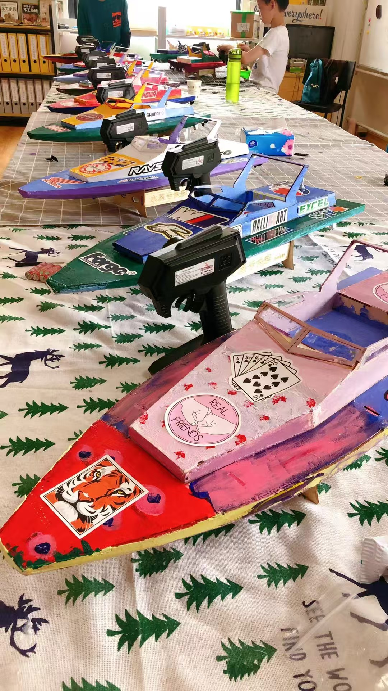
11 · Handmade
Handmade Boats
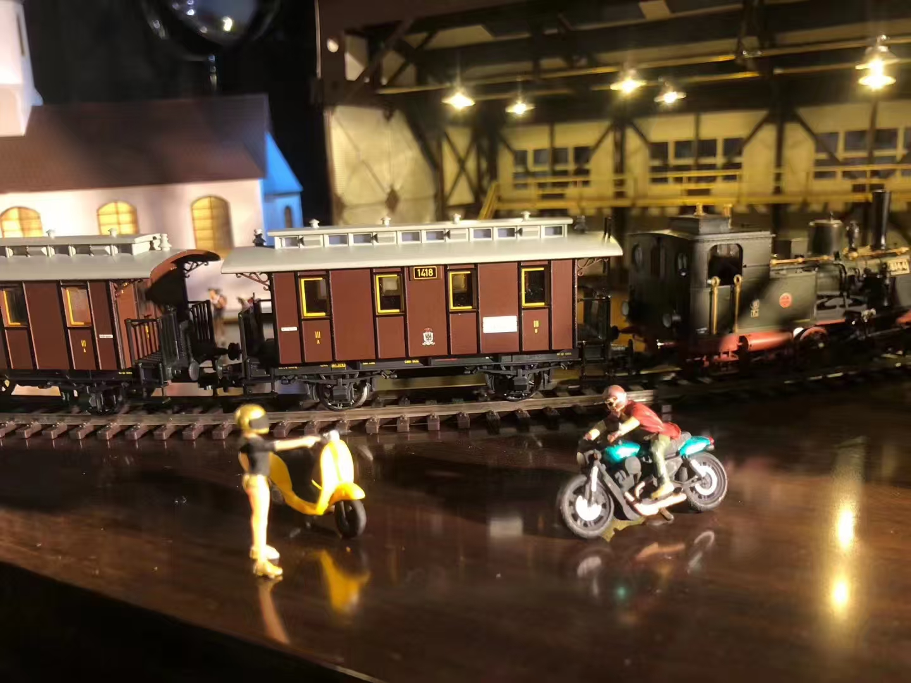
12 · Handmade
Train Encounter
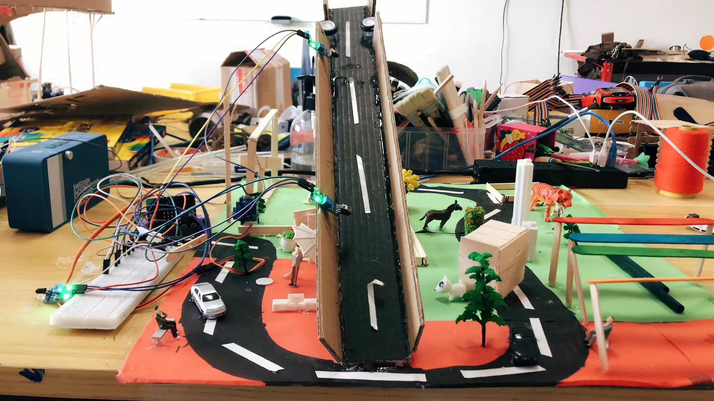
13 · Handmade
City Bridge Prototype
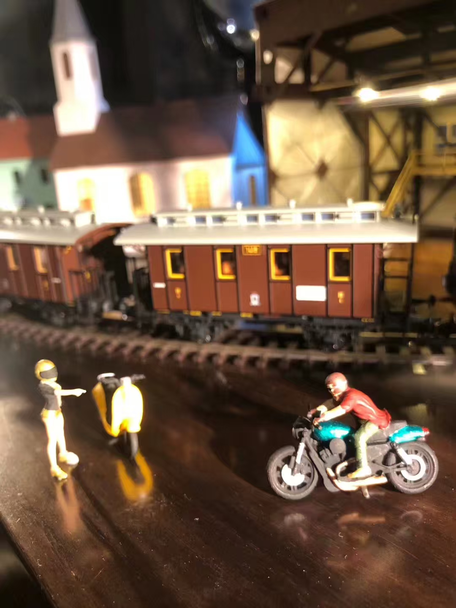
14 · Handmade
Motorcycle Scene
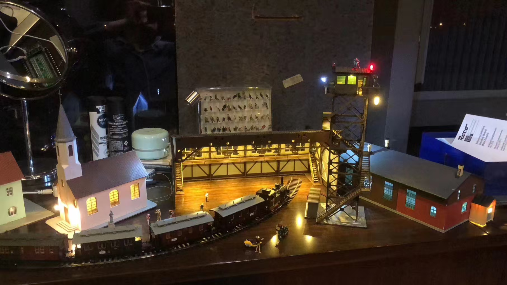
15 · Handmade
Illuminated Railway World
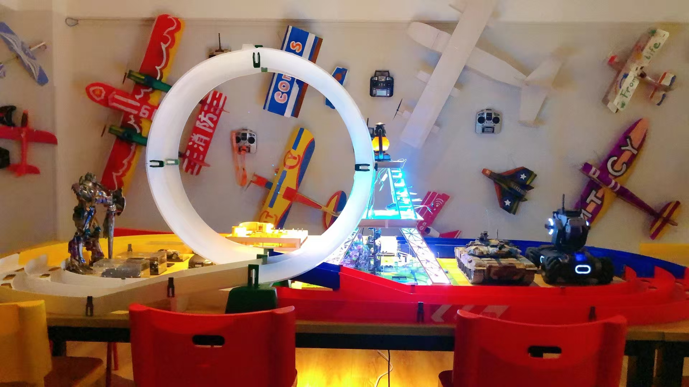
16 · Handmade
Aircraft Display
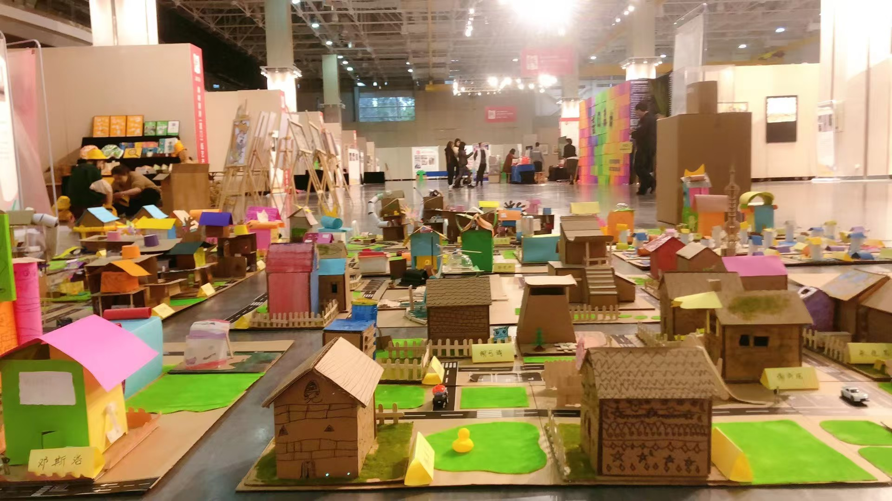
17 · Handmade
Handmade City Exhibition

18 · Handmade
Xiamen Station Model

19 · Handmade
Homeland Creative Models